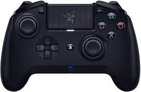

Manette Razer Raiju Ultimate PS4

Manette Razer Raiju Ultimate 199.99 €
Caractéristiques de la manette Razer Raiju
C'est comme une manette PS4 Dualshock 4 normale sauf qu'il y a des spécifités en plus.
Joysticks interchangeables, croix directionnelle et panneau de configuration rapide.
Configuration de l'application avancée
Connexion Bluetooth et Filaire
Vous pouvez faire le choix de mettre votre Joystick gauche en haut ou en bas lors de l'achat